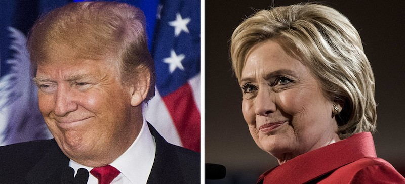

2016-09-23 08:00

American Exceptionalism is an article of faith of both Republicans and Democrats, even Liberals. In the eyes of many Americans our global dominance is proof that God conferred special blessings on us. Sending American “peacekeeping forces” to drop bombs on one more country is as natural as Friday night football or fast food. Being the world’s cop is seen as a right and a responsibility – sort of an updated version of Kipling’s “White Man’s Burden.” The world is filled with children and somebody has to be the grownup.
E.J. Dionne’s piece, reprinted from the Washington Post (“Americans are deciding for the world,” September 23rd) is no exception. Dionne begins his piece with a tip of the hat to American Exceptionalism – the Presidential election “will be a choice on behalf of the entire world” – and then he argues that we need a president who doesn’t believe in authoritarianism. But the choice of president is not nearly as important as the authoritarianism the United States cultivates – elsewhere.
We’ve never been shy about supporting dictators like Augusto Pinochet, undermining another country’s elections, or supporting military occupations – as we did in South Africa and still do in the West Bank. Our military is in more than 150 other nations. We can ensure “compliance” from those who would cross us with sanctions, bunker busters, cruise missiles, drones, or nuclear weapons. We have a permanent veto in the United Nations and we can use international organizations to pressure others into supporting our wars – or we can just ignore them altogether. We send our enemies to the International Court of Justice – but we won’t be bound by it ourselves.
There’s a pretty thin line separating autocracy from a belligerent superpower. One is a bully in his own country; the other in the whole world. So it’s hardly a surprise when a global bully starts growing them at home.
E.J. Dionne says he’s concerned that “allowing Trump to win would strengthen the autocratic Vladimir Putin in Russia and the far right in Europe with which he is now allied.” While Russian nationalism is every bit as toxic as the American variety, Russia has actually been historically opposed to fascism. Emerging fascist elements in the Ukraine and Poland, where American concern for democracy comes second to installing missile systems, alarms Russia.
If the United States were truly interested in weakening autocratic regimes – other than by turning dictatorships into failed states, as we have done with bi-partisan resolve for 25 years – we might start by holding them accountable and taking away their allowances. Let’s make it known we won’t reward military dictatorships (sorry, Egypt). We won’t reward inhuman occupations (tough beans, Israel). We won’t give you any more missiles if your family-owned state is indistinguishable from ISIS or had something to do with 9/11 (I’m talking to you, Saudi Arabia).
And we might shut down our secret gulags and black sites while we’re at it. Those are for despots and autocrats, not for supposed democracies.
Let’s not kid ourselves. The next American election is a choice between a con man who would just love to try out the knobs and dials of foreign policy and military power – and another who has already used them to make the world a more dangerous place – and who has no qualms about pushing them again. Neither of these two candidates is any less lethal than the other, nor any more dedicated to democracy for the rest of the world. Hillary Clinton demonstrated American tone-deafness best when she addressed the VFW recently: “You may wonder how anyone could disagree, but in fact my opponent in this race has said very clearly that he thinks American exceptionalism is insulting to the rest of the world.” Well, it is.
Americans do not make choices “on behalf of the world.” We make choices in our own interests that often harm the rest of the world. Like Clinton, we can feign astonishment that being a bully is unacceptable to the rest of the world – but ultimately we just don’t care what the other kids think.
And, anyway, what are they going to do about it?